What limits our scan resolution
Summary. We set out to understand when an STM image stops showing the surface and starts showing noise. Section 1 explains how our firmware builds an image (trace and retrace, Y+ and Y− half-sweeps, continuous Y motion) and what piezo creep and hysteresis do to it. Section 2 models three limits on resolution: sampling (pixels per feature), speed (how fast features pass the tip against the signal chain's bandwidth) and slant. It also shows why about 5–6 pixels per atom spacing are needed before atoms render evenly, not the 2 that Nyquist suggests.
Section 3 tests these ideas on 1,125 sweeps from the Sept 24 gold run, including a zoom ladder from 30 nm to 0.7 nm on one spot. Neighbouring rows stop agreeing below a window of about 2–5 nm (nominal). The causes, in order of weight: (1) the feedback loop is slower than one scan line, so a lag profile repeated on every row dominates the image (up to 98% of its variance). (2) A row-to-row noise floor of a few pm, made mostly of a ~3 Hz wobble and one tone that appears to come from a Z vibration near 160 or 230 Hz. (3) The surface relief inside a smaller window shrinks until it drops below that floor. Atomic sampling, slant and the lateral calibration are not the limit yet. A robustness check (Section 3.4) confirms the lag result without assuming the artifact is fixed in X: 78–97% of each image flips sign with scan direction, and surface signal repeats from frame to frame only in windows larger than a few nm. Testing the cleanest processed image against the zoom ladder (Section 3.6) shows its main band is fixed in the scan frame, so it isn't surface; the best evidence of real morphology is at 25 nm. The thin streaks carry one tone from a fixed source near 159.5 or 231 Hz (Section 3.7). Section 5 lists the experiments that would confirm each cause.
1 · Background: how a scan is built
1.1 How the piezo disc moves the tip
The scanner is a piezo disc whose top electrode is cut into four pads, like a cross seen from above. The tip hangs from the centre on a stem. The piezo driver turns three DAC signals (X, Y, Z) into four pad voltages: Z + X, Z − X, Z + Y and Z − Y. So the "X axis" is really a see-saw: X raises one end of the X arm and lowers the other, which tilts the disc, and the tilt swings the tip sideways. Y is a second see-saw across the other arm. Z adds the same voltage to all four pads, which lifts or lowers the whole cross without changing its tilt.
- Z moves the whole cross up and down; every pad changes by the same amount, so the tilts don't change.
- X see-saws the X arm: Z + X rises while Z − X falls by the same amount. The Y arm doesn't move.
- Y does the same on the other arm, leaving X alone. During a scan X rocks fast (the fast axis) while Y is held almost still and creeps slowly (the slow axis).
- The tip swings toward the raised side by roughly stem length × tilt angle, which is why a tilt becomes a sideways scan.
1.2 Fast axis, slow axis and the four images
- Trace and retrace: every line goes X− → X+ (blue) and straight back (orange). Both are recorded as separate data streams.
- Y never stops: it creeps up during both passes, so each pass slopes slightly. The retrace runs half a row above its trace, and the next trace starts one row up.
- Y+ then Y−: after the top row, Y reverses and walks back down over the same rows (dashed). The tip never jumps.
- Four images per Y cycle: each colour fills its own image (right). Retrace rows are stored back in X order.
drift_corr_y); the replay tool shows one stream at a time (e_trace by default). All four streams are saved for both Z and error. Replay calls the Y+ half "▲ up" while the live raster calls it the "down sweep", so name the halves Y+ and Y− to avoid confusion. Comparing trace with trace, from the same Y half, is the like-for-like comparison over time.
1 Rows and resolution. The schematic surface has 4 atoms across, so pixels per atom = rows ÷ 4. At 8 rows (2 px per atom) the scan meets the Nyquist minimum: the atom spacing is recorded, but each atom is sampled at a different offset from its centre, so atoms come out unevenly bright and the image looks noisy (sampling-phase scatter, Figure 9b). Even atoms need about 5–6 px per atom spacing, which keeps the scatter under ~15%: choose 20 or 24 rows to see it. Below 2 px per atom (4 or 6 rows) the rows skip over atoms and the image shows a false pattern. Use a higher speed at 20–24 rows, since one Y cycle is 40–48 lines.1.3 Row pitch and slant
Row pitch = scan size ÷ (Pixels/line ÷ 2), the same in X and Y; scans are always square. Because Y moves during the line, each trace row slopes by half a row pitch over its length, and the retrace covers the other half pitch. The tip draws a shallow zigzag, and the next trace starts exactly one pitch above the last. Live view and replay draw rows flat, so the image is sheared by at most half a pixel. Figures 5, 6 and 8 show this.
1.4 Piezo creep and hysteresis
After a voltage change a piezo keeps moving slowly: \(\Delta l(t) = \Delta l_{0.1}\left(1 + \gamma\,\log_{10}\dfrac{t}{0.1\,\mathrm{s}}\right)\), about 1.5% more per tenfold time for a stiff stack (vendor γ ≈ 0.015). Modelling the Y triangle as a sum of small steps predicts an offset between the Y+ and Y− images of about 0.8% of the scan size: ≈2 rows at 256 rows, ≈4 at 512. The offset is the same at every line rate, because the log law has no time scale. Hysteresis adds a rate-independent offset of the same sign. That rate-independence separates both from loop lag, which grows with line rate. Our scanner's γ is unknown and could be several times the vendor value. Within a row, X turnarounds (15–50 ms) are below the formula's 0.1 s range.
1.5 Lateral calibration
The nm on every axis label come from piezo_x/y_nm_per_v = 5.0, a placeholder that has never been calibrated. It may well be off by several times; one guess is 4× too small. A wrong calibration scales every nm figure in this report but does not by itself cause images to decohere. Calibration needs a known spacing: graphite atoms (0.246 nm), the Au(111) herringbone (~6.3 nm) or a grating.
2 · Model: three limits on resolution
An STM image can lose atoms in three independent ways. Each depends on different settings, so this section models them separately and then combines them. The terms below are used throughout; the glossary (Appendix B) has the full list.
2.1 Concepts
- Pixel pitch
- The distance between neighbouring pixels (and rows): scan size ÷ pixels per row. Smaller pitch = finer sampling.
- Pixels per atom
- Atom spacing ÷ pixel pitch. The single most useful number for "can we see atoms?".
- Nyquist minimum (2 px per atom)
- With fewer than 2 samples per atom spacing the lattice can't be recorded at all; the image shows a false pattern (aliasing, or moiré).
- 5–6 px rule
- Between 2 and ~5 px per atom, the lattice is recorded but each atom is hit at a different spot, so atoms look unevenly bright: deterministic "noise" called sampling-phase scatter (Figure 9b). About 5–6 px per atom keeps it under ~15%.
- Tip speed and atom rate
- During a trace the tip moves at 2 × scan size × line rate. Dividing by the atom spacing gives how many atoms pass the tip per second, a frequency in Hz.
- Signal bandwidth
- The current preamp and the electronics after it smooth the signal like a low-pass filter. Signals faster than the corner frequency (~400 Hz measured) are weakened. If atoms pass faster than that, their contrast fades and they smear along the row.
- Feedback loop and KIGA
- In constant-current mode the firmware moves Z to keep the current constant. KIGA is that loop's gain: higher KIGA = faster Z response. The loop's crossover frequency (≈ 15.7 Hz per unit KIGA at the 100 kHz loop rate) is roughly the fastest change it can follow.
- Z image vs error image
- Features slower than the loop crossover show up in the Z image (height). Faster ones, such as individual atoms at normal scan speeds, show up only in the error (current) image. After each X turnaround the loop also lags for a while, leaving a "lag tail" along the start of every row.
- Half-sweep
- One pass of Y across the whole scan (Y+ or Y−), which produces one complete image. Section 1.2 shows it animated.
- Slant
- Because Y moves during each row, every row is tilted by half a row pitch. Harmless at normal row counts (Figures 5, 6 and 8).
2.2 Settings
The settings bar below stays at the top of the screen while you scroll through Figures 3–8, so you can watch the figures change as you move a slider. It drives every figure in this section except Figure 9, which has its own controls. Defaults match a typical scan: 30 nm, 512 pixels per line, 10 Hz requested.
- Scan size
- Width of the square scan window.
- Pixels per line
- The GUI's "Pixels/line". It counts the trace and retrace together, so the image is half that many pixels wide and the same number of rows tall.
- Line rate
- Lines per second requested. The firmware rounds samples per pixel down, so the realized rate (shown in the bar) can differ.
- Line re-scan
- Each row scanned N times and averaged. Only changes the time per image.
- Feature
- Atom spacing of the surface being imaged.
- Lattice rotation
- Angle of the lattice to the scan rows. Affects Figures 4 and 4 only.
- Signal bandwidth
- Corner frequency of the preamp and electronics; ~400 Hz measured on Sept 17.
- Feedback gain KIGA
- Speed of the constant-current loop. The bar shows the fastest change it can follow. Drives the two feedback tiles and Figure 4's Z / error switch.
What the image would show
Tip path over the atoms, to scale
Slant angle vs rows
Contrast vs line rate at this scan size
Which scan windows resolve this feature
2.3 Coverage and sampling phase (own controls)
Coverage viewer: which atoms does a slanted scan miss?
Peak-capture scatter: when a regular lattice starts to look noisy
3 · Case study: Sept 24 gold, zooming in on one spot
Where the evidence landed (read this first). This section records the analysis in the order it was done, and some early readings were revised by later tests. The conclusions that stand:
- The large-window images show real surface. At about 25 nm and up, features repeat from frame to frame, survive averaging the two scan directions, and scale correctly when the window shrinks. The ledge seen while zooming in at 25–30 nm is real.
- The zoom works. For every window pair down to 10.5 nm, every frame fits the commanded zoom better than no zoom. Where the ratio can be measured, it is within about 5–10% of the command (Section 3.6a).
- The 10.5 nm image in Figure 17 G is not a good surface image. It looks clean and repeats perfectly, but two-thirds of it is the leftover lag pattern. Repeating is not the same as real.
- Below about 10 nm, the instrument dominates the picture. The feedback loop is slower than one scan line, so Z trails the tip and leaves the same U-shaped lag profile in every row (Figures 14 and 14b). It repeats perfectly, so it looks crisp and stable, but it is fixed to the scan, not the sample. The dark band in Figure 16 G is mostly this.
- Real surface signal at small windows is small, not absent. It falls with window size until row-to-row noise matches it, at about 2–5 nm (Figure 11). Fixing the loop (faster KIGA, slower lines) should lower that limit; Section 5 lists the tests.
3.1 Data
The Sept 24 "real run" (19:06–20:01): gold sample, a tip the operator marked good, preamp 1X, firmware 5.6 with a 100 kHz control loop, KIGA 1.1444 (integrator crossover ≈ 18 Hz), constant current on. It contains 1,125 complete sweeps, including a zoom ladder from 19:06 to 19:11 that steps from 30 nm down to 0.73 nm on one spot at 256 px. Sweep numbers are as shown by the day's sweep player (#665 = 19:06:18).
Line-rate correction. The scan files record only the line rate requested at the start, but the journal shows it was changed during the run. Rebuilding the realized rate for every sweep from the journaled commands (using the firmware's own rounding) agrees with the sweeps' timestamps for 97% of them. Only the first ladder step (30 nm) ran at 32.55 Hz; every later step ran at 195.3 Hz. The 50 nm scans that requested 97.66 Hz also ran at 195.3 Hz: in floating point, 97.66 Hz × 512 px rounds samples per pixel down from 2 to 1, doubling the rate. The scan notes for that day give 97.66 Hz and should be corrected.
3.2 Methods
Each sweep's Z trace image has every row's offset and slope removed. Three measures are then taken:
- Pixel-locked fraction: the share of image variance in the average row profile, i.e. content that is identical at the same X in every row. Figure 11 shows what this removes and what it keeps.
- Adjacent-row correlation r: after the average row profile is subtracted, how alike each row is to the next. Surface structure that changes slowly with Y gives r near 1; noise that is independent from row to row gives r near 0.
- Slow-axis spectra: each column, sampled once per line, is a time series at the realized line rate. Its spectrum shows what the row-to-row noise is made of.
Z values are converted with the placeholder Z calibration (3 nm/V), so pm figures are relative.
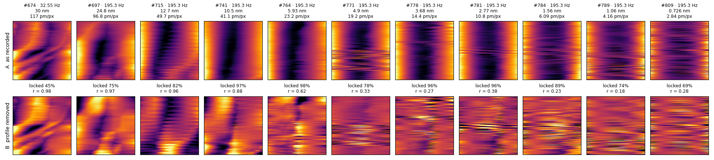
Figure 11. Splitting one sweep into "the same on every row" and "what's left"
Sweep #741 (10.5 nm window, Z channel). Panel 1 is the recorded image. Panel 2 is built from a single line, the average of all 256 rows, repeated on every row. Panel 3 is panel 1 minus panel 2. So panel 1 = panel 2 + panel 3, exactly. Panels 1–3 share one colour scale, so their brightness can be compared directly. Assumption: calling panel 2 "the artifact" assumes the artifact sits at the same X in every row. The valley in panel 1 actually tilts slightly toward the bottom left, so that assumption is only approximate. Section 3.4 tests it with a method that doesn't need it, and confirms the main result.
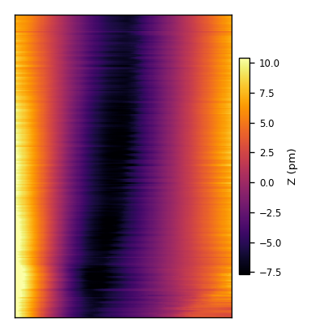
1 · As recorded. A dark valley runs top to bottom about 35–40% across. It looks like a groove on the surface.
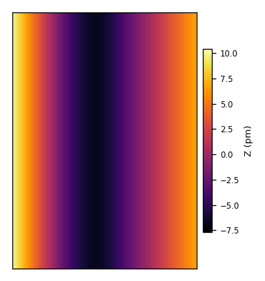
2 · The same on every row. One average row, repeated. It already reproduces almost all of panel 1: 97% of the image's variance.
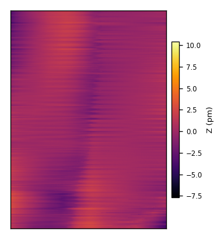
3 · What's left, same scale. Nearly flat. Its amplitude is 0.8 pm rms against 4.8 pm for the recorded image, about one sixth.
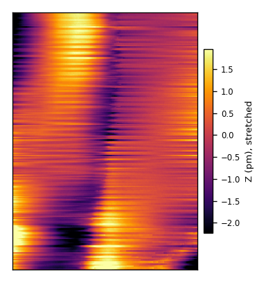
4 · Panel 3, contrast stretched ×6. Now visible: a faint copy of the valley that shifts a few pixels between top and bottom, a few patches spanning many rows (bottom left), and thin single-row streaks.
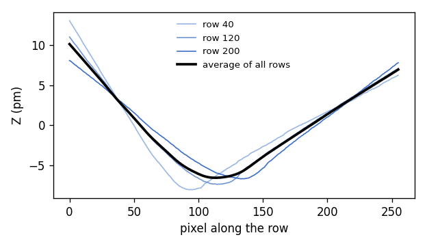
5 · Three rows (blue shades) and the average row (black). The valley sits at the same X in every row, which is why averaging the rows keeps it.
Is panel 4 good or bad? It's the honest picture of what this sweep recorded about the surface: very little. Structure that spans many consecutive rows (the bottom-left patches, the slow shift of the valley) changes smoothly with Y, so it is real surface or slow drift. Thin streaks one row tall are noise. Here neighbouring rows still mostly agree (r = 0.88), so some real structure survives, but its amplitude is about one sixth of the lag artifact. The takeaway is that most of what panel 1 appears to show isn't surface.
Figure 11b. Check on a made-up image: does the removal delete real features?
A synthetic image with a known answer: a valley-and-peak shape present in every row (standing in for the lag artifact), one round bump that only some rows cross (standing in for a real surface feature), and a little noise. Panels 1–3 share one colour scale.
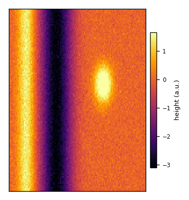
1 · As "recorded". The repeated shape plus the bump at right.
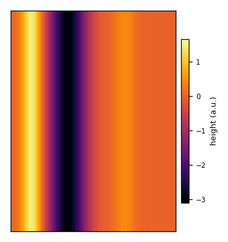
2 · The same on every row. The average row repeated. The bump barely shows, because only about a fifth of the rows contain it.
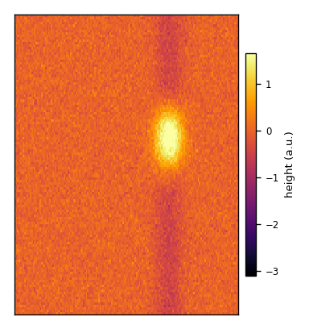
3 · What's left. The repeated shape is gone and the bump is intact.
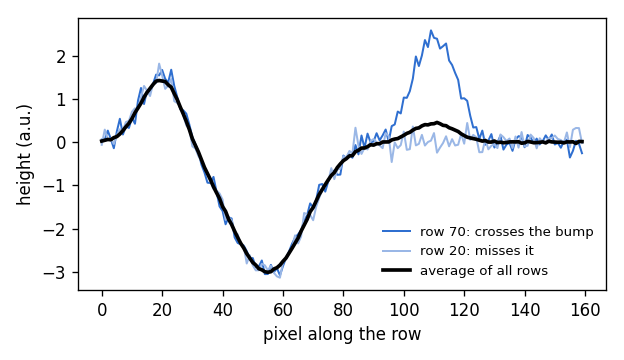
4 · Two rows and the average row. Row 70 has the peak–valley–peak plus the bump; row 20 misses the bump. The average follows the shared part only.
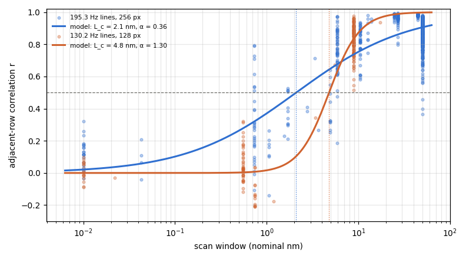
| Realized line rate | Windows | Sweeps | Row coherence r (median) | Image taken by lag profile (median) |
|---|---|---|---|---|
| 32.6 Hz | 30 nm | 18 | 0.98 | 52% |
| 65.1 Hz | 25 nm | 5 | 0.97 | 64% |
| 130 Hz (128 px) | 8–20 nm | 130 | 0.85 | 56% |
| 195 Hz | 8–20 nm | 51 | 0.84 | 96% |
| 195 Hz | 45–50 nm | 515 | 0.80 | 57% |
| 390 Hz (128 px) | 8–20 nm | 28 | 0.79 | 79% |
Was the speed fine? No. Every sweep on Sept 24 ran at 33–390 Hz lines, and most at 195 Hz. At KIGA 1.14 the loop needs about 9 ms to respond, longer than a whole line at 195 Hz (5.1 ms), so Z never caught up within a row. The slowest sweeps (33–65 Hz, large windows) had the most coherent rows (r ≈ 0.97–0.98). At 195 Hz the lag profile took up to 96% of the image at 8–20 nm. These comparisons mix windows, pixel counts and times, so they are indicative, not a controlled test.
Recommendation: slower lines are better with this loop. To keep the lag tail under ~5% of a 256 px row, the line rate must be about 3 Hz at KIGA 1.14, or about 10 Hz if KIGA is raised to ~4.6. Faster than that, the image mostly shows the loop rather than the surface. The settings calculator (Section 2, "Feedback lag tail" tile) computes this for any setting, and the KIGA and line-rate sweeps in Section 5 are the controlled test.
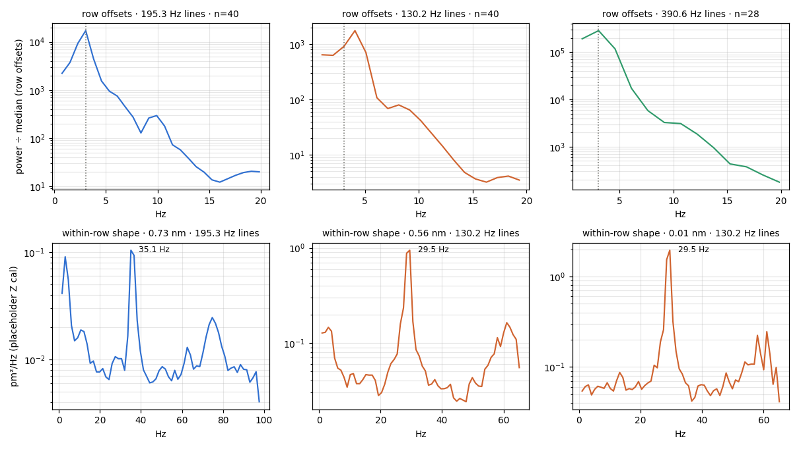
3.3 Results
- Real 2D structure survives only in windows of about 10 nm or more (r ≥ 0.85). It is gone below about 2–5 nm, depending on line rate and pixel count.
- The repeated row profile dominates mid-size windows: 78–98% of image variance from 12.7 to 2.8 nm.
- The Z channel barely follows the surface. Z varies by only ~4–6 pm rms even across 45–50 nm of gold, where monatomic steps are 235 pm. This fits the earlier finding that Z carried only tilt and the morphology sat in the error channel.
- The noise floor is not white. It is a ~3 Hz row wobble plus one tone that appears to come from 160 or 230 Hz, at a few pm rms in total.
- No lattice periodicity was found in any sweep's 2D spectrum. The strongest peaks were either at the lowest frequencies searched or at fixed row periods that trace back to the tones above.
3.4 Robustness check: is the valley surface or instrument?
The decomposition in Figure 11 assumes the artifact is identical at the same X in every row. Two independent tests, run on the same recorded data, avoid that assumption.
- Trace against retrace. Every row is scanned in both directions. A surface feature looks the same whichever way the tip moves. Feedback lag does not: the loop trails behind in the direction of travel, so its error flips sign when the direction flips. Averaging the two directions, S = (trace + retrace) / 2, keeps the surface and cancels the lag. Half the difference, L = (trace − retrace) / 2, keeps the direction-dependent part.
- Repeat frames. The ladder recorded many sweeps at each window, ~1.3 s apart. Real surface structure repeats from one frame to the next; noise doesn't. Each frame is compared with the next frame of the same Y direction (~2.6 s later), so hysteresis is the same in both.
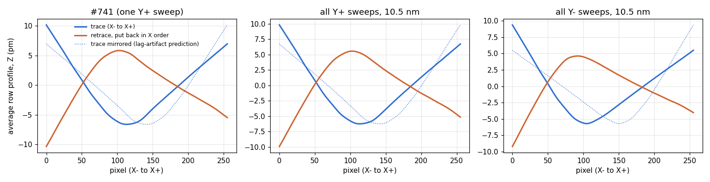
3.4a Feedback lag, step by step
Figure 14 showed that the valley in the 10.5 nm images flips between the outward and return passes. The mechanism is the feedback loop. In constant-current mode the firmware moves Z up and down to hold the tunnel current steady, the way a driver steers to stay in lane. That only works if the steering is faster than the road bends. The loop's speed is set by KIGA; at the Sept 24 setting (1.14) it needs about 9 ms to respond. A line at 195 lines per second lasts 5.1 ms, out and back. So within one line the loop barely reacts. Z only follows slow changes from one row to the next, and inside each row it trails the tip: behind in one direction on the way out, behind in the other direction on the way back.
When each row is then levelled for display (its offset and tilt removed), that trailing leaves a smooth U on the outward pass and an upside-down U on the return pass, at the same place in every row. The shape depends only on how the loop's response time compares with the line time. It doesn't depend on what is under the tip, which is why it looks identical in every frame and stays put in the frame when you zoom.
Figure 14b reproduces this from first principles. It runs the same kind of loop as the firmware (an integrator that closes the gap between Z and the surface at a rate set by KIGA) over one row of a made-up surface, repeated until it settles. Change the line rate, KIGA or the window, and the U either stays or disappears. The presets show the Sept 24 settings and the fixes proposed in Section 5.
What these settings mean for the targets this report expects to resolve
Time per image = rows ÷ the line rate the firmware actually runs (one Y half-sweep, line re-scan off). Lag tail = loop response time × tip speed, as a share of each row. Drift shear = how far the sample drifts during one image, as a share of the window, for an assumed lateral drift of 20–60 pm/s (the rough Sept 24 range; Section 4). Pixels per feature uses the 5–6 px rule from Section 2. Not included: the signal-bandwidth limit on atomic contrast (Section 2, Figure 3), which also favours slow lines for atoms. All sizes are nominal nm (uncalibrated piezo).
3.4b Why the lag wins in small windows but not in large ones
The line rate was the same (195 lines per second) for every window of the Sept 24 zoom ladder, so the lag was present in every image. What changes as the window shrinks is how much real surface is left to compete with it. A 25 nm window contains large height changes, such as hills and ledges spanning many rows. The loop can't follow them within a row, but it does follow them slowly from one row to the next, so they build up in the image. A 5–10 nm window is a smaller, flatter patch: there is much less height change left in it. The lag pattern stays roughly the same size, because its size is set by the loop and the line timing, not by the window.
How Figure 14c was derived. For each window of the concentric ladder (19:08–19:13, 195 lines per second, 256 pixels), all frames at that window were processed the same way as Figure 17 G: trace and retrace averaged (which cancels the part of the lag that flips with scan direction), each row's offset and tilt removed, then all frames averaged. Each averaged image was then split in two:
- Lag part: the average of all rows, repeated on every row. This is everything that sits at the same place in every row; Section 3.6 shows it stays fixed in the frame when zooming, so it is instrument, not sample.
- Surface part: everything else, which changes from row to row. Section 3.6 shows it moves and scales with the sample at 25 nm.
The bar heights are the root-mean-square size of each part in picometres (placeholder Z calibration). The two parts add up to the whole image exactly. Limitation: anything real that happens to run straight along the slow axis through the whole window would be counted as lag; the zoom test in Section 3.6 is what separates the two.
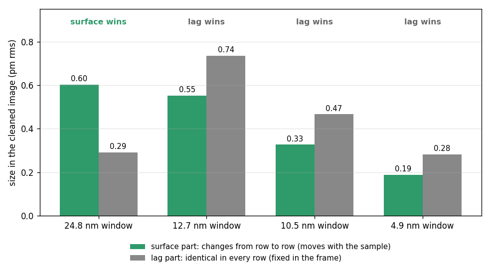
Figure 15. Sweep #741 split by scan direction instead of by rows
Panels 1–4 share one colour scale. Trace = S + L and retrace = S − L, exactly.
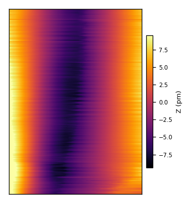
1 · Trace (X− → X+). Same image as Figure 11, panel 1.
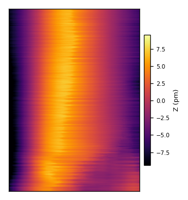
2 · Retrace, put back in X order. The valley has become a ridge.
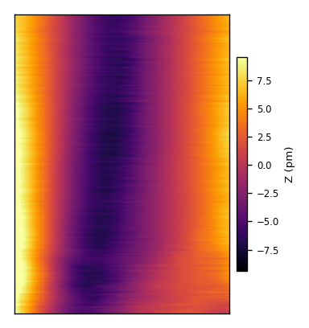
3 · L, the part that flips with direction. Almost the whole image: 98% of the variance, 4.5 pm rms.
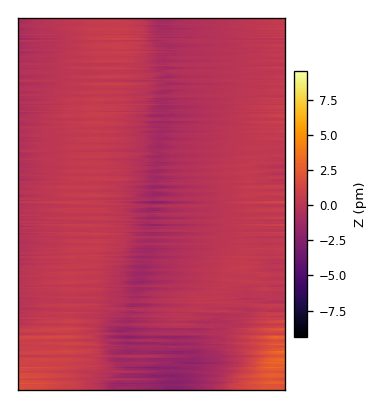
4 · S, the part both directions agree on, the surface estimate. Nearly flat at this scale: 0.7 pm rms.
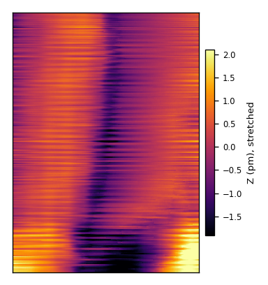
5 · S, contrast stretched. A faint dark band remains, slanting toward the bottom left, plus row streaks.
But panel 5 adds something the row method hid. After the lag is cancelled, a faint band slanting toward the bottom left is still there, and it repeats from frame to frame (repeat correlation 0.80 across the 42 sweeps at 10.5 nm). So the diagonal in the recorded image is partly direction-independent structure sitting under the lag, about one sixth of the lag's amplitude. Update: it repeats and appears in both Y halves, but it fails the zoom test in Section 3.6. It stays at the same pixel position when the window shrinks, so it is most likely instrument signal that folding doesn't cancel, not surface. The row method would have removed most of it, because a band that is nearly vertical is nearly "the same on every row". Two possible sources remain: a faint real feature on the gold, or a slow instrument effect that doesn't depend on direction (for example creep). The recorded valley also creeps steadily across frames, about 0.2 px per second over the 54 s of sweeps; whether the band moves with it hasn't been measured separately yet.
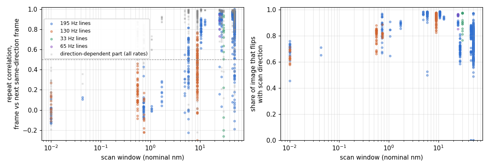
What this changes. The main conclusion stands, now on a method that doesn't assume the artifact is fixed in X: the Z images are dominated by feedback lag, and repeatable surface signal disappears in windows smaller than a few nm. Two refinements:
- Folding trace and retrace is the better standard method. It recovers direction-independent structure, including the slanted band in #741 that the row method partly removed. This matches the earlier finding (
docs/ai/hypotheses/stretch-compensation.md) that trace/retrace folding improves reproducibility. - Repeatability should be the acceptance test for "morphology". A feature counts as surface only if it survives folding and repeats across frames. It should also move with drift as one block; that test needs a drift measurement, which failed here because the lag dominates image registration.
3.5 The cleanest-looking image (and why it is not a good image of the surface)
The folded image S (Figure 15, panel 5) is the best starting point, because it has the feedback lag cancelled. It still carries streaks. This section asks two things: which row alignment shows it best, and what the streaks are, including whether they are the ~3 Hz wobble.
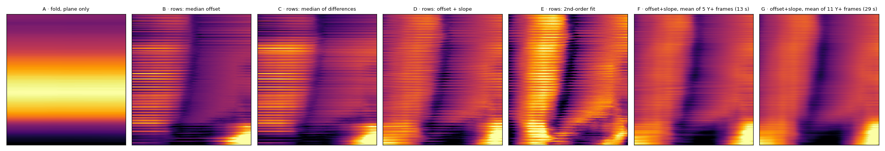
- A, plane only: no per-row alignment. The whole image is dominated by slow height changes between rows (75 pm rms), so the surface is invisible.
- B, median offset per row and C, median of row differences: the two standard STM row alignments. The band and the bottom features appear, with strong fine streaks.
- D, offset + slope per row: the version shown in Figure 15. Fewer streaks than B and C.
- E, 2nd-order fit per row: removes row curvature too. Smoothest single frame, but it also bends real features: the band is distorted and the left side brightened, so it over-corrects.
- F, G, offset + slope, then averaged over 5 or 11 consecutive Y+ frames (13 or 29 s). The fine streaks almost disappear, while the band and the bottom features stay.
Verdict on Figure 17 G (10.5 nm): not a good image of the surface.
- It is coherent. The average of 11 frames gives the same picture every time, both Y halves agree, and even single frames at this window are coherent row to row (r ≈ 0.88). Averaging mainly removed the fine streaks.
- Coherent is not the same as real. About two-thirds of the image is the leftover lag pattern, fixed in the frame: the dark vertical band (Section 3.6). Only about a third moves with the sample, and that third is weak, about 0.3 pm (Figure 14c).
- Why it looks good: averaging strengthens anything that repeats, and the instrument's own pattern repeats perfectly. So averaging made the artifact cleaner, not the surface clearer.
- Unconfirmed parts: the dark band along the bottom and the bright bottom-right corner appear in both Y halves but haven't been tested against the zoom. Don't treat them as surface yet.
- Rule for Sept 24: trust images at about 25 nm and above as surface. Treat 10.5 nm and below as instrument-dominated until the loop is faster or the lines slower.
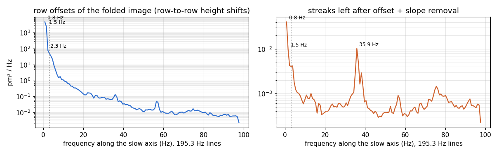
- Left, row offsets (each row's average height; the broad bands in panel A of Figure 17): 64% of the power is below 1.5 Hz (slow drift) and 35% at 1.5–5 Hz, which includes the ~3 Hz wobble. At these line rates a 3 Hz wobble is a slow band about 64 rows tall, not a thin streak.
- Right, what is left after offset + slope removal (the thin streaks in panel D): only 0.35 pm rms. One sharp tone at 35.9 Hz (a pattern every ~5.4 rows), plus broadband row-to-row noise up to the 98 Hz limit. Only 15% is in the 1.5–5 Hz band.
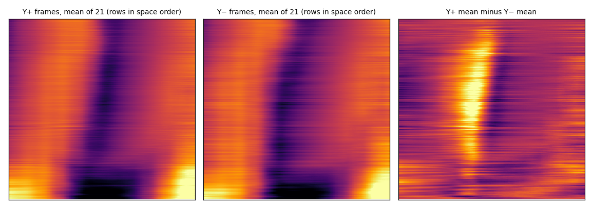
Answer to "is the streaking the 3 Hz distortion?" Partly. The ~3 Hz wobble is the biggest row-to-row disturbance, but it shifts whole rows up and down over about 64 rows, and row alignment removes it. The fine, one-to-five-row streaks left in the folded image are mostly a 35.9 Hz tone and broadband noise. Both change from frame to frame, so averaging a few frames removes them. What survives folding, alignment and averaging, and appears in both Y halves, was the best candidate for real surface structure in this window. Section 3.6 tests it against the zoom ladder, and the band fails.
3.6 The zoom ladder: does the scanner zoom, and what zooms with it?
From 19:08:36 to 19:13:24 the scan centre did not move (constant X and Y offsets in the journal) while the window shrank from 24.8 to 4.9 nm. Every window is therefore centred on the same spot, which allows two separate questions. (a) When the GUI commands a zoom, does the scanner zoom by that amount? (b) As the window shrinks, does each image's content grow and move outward as a surface feature must, or does it stay put in the frame as an instrument pattern does?
3.6a How accurate is the zoom?
When the GUI commands a zoom, say 2.36×, does the scanner really zoom 2.36×? Each frame of a smaller window is shrunk by a range of trial zoom ratios and matched inside the larger window's averaged image, near the shared centre. The best-fitting ratio is that frame's measured zoom.
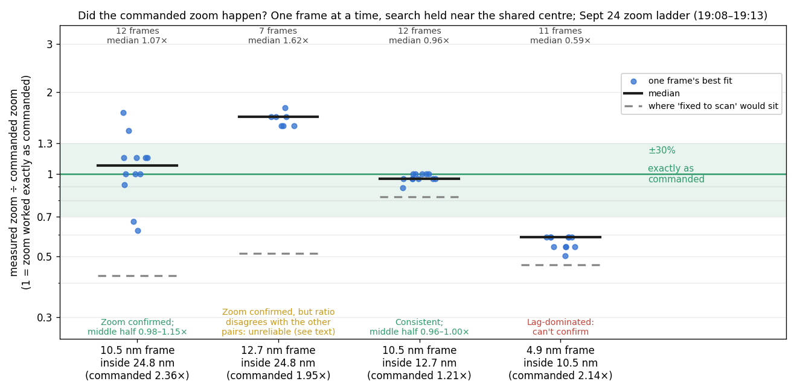
- 10.5 nm inside 24.8 nm: median 1.07×; the middle half of frames spans 0.98–1.15×.
- 12.7 nm inside 24.8 nm: median 1.62×. Every frame still prefers the commanded zoom over no zoom. But the value can't be right: see the consistency check below.
- 10.5 nm inside 12.7 nm: median 0.96×; middle half 0.96–1.00×.
- 4.9 nm inside 10.5 nm: 0.59×, close to "fixed to the scan". This window is dominated by the lag profile, so its zoom can't be graded from images.
Consistency check. Zoom ratios must chain: zoom(24.8 → 10.5) = zoom(24.8 → 12.7) × zoom(12.7 → 10.5).
| Step | Commanded | Measured (median) |
|---|---|---|
| 24.8 → 12.7 nm | 1.95× | 3.16× (1.62 × 1.95) |
| 12.7 → 10.5 nm | 1.21× | 1.16× (0.96 × 1.21) |
| Chained 24.8 → 10.5 nm | 2.36× | predicted 3.67× from the two steps; measured directly 2.53× (1.07 × 2.36) |
The direct measurement and the second step agree with the command; the 24.8 → 12.7 step doesn't agree with either. The 12.7 nm frames are steady across all seven (1.5–1.75×), and none fall in the middle of a zoom change: the zoom command came at 19:09:42.8 and the first 12.7 nm frame started at 19:09:44.1. The most likely cause is that two-thirds of each 12.7 nm frame is the lag profile (part b below), which can pull the match toward the wrong scale. The images on hand can't settle it.
Recommendation: keep the zoom as it is. There is no consistent evidence of a zoom error, so a correction curve built from this data would be fitting noise. The decision belongs to the graded zoom ladders and the lattice calibration in Section 5 (items 12 and 13). Build a scan-size-dependent correction only if those show a consistent deviation larger than about 10%.
3.6b What scales with the zoom, and what stays fixed?
Repeating from frame to frame and appearing in both Y halves cannot tell surface from an instrument pattern, because an instrument pattern tied to the scan's own coordinates also repeats. The zoom ladder can. When the window shrinks from L₁ to L₂, a surface feature must grow by L₁/L₂ and move outward from the centre. An instrument pattern stays at the same place in the frame. Each window below is processed exactly like Figure 17 G (folded, offset + slope per row, averaged over all frames at that window).
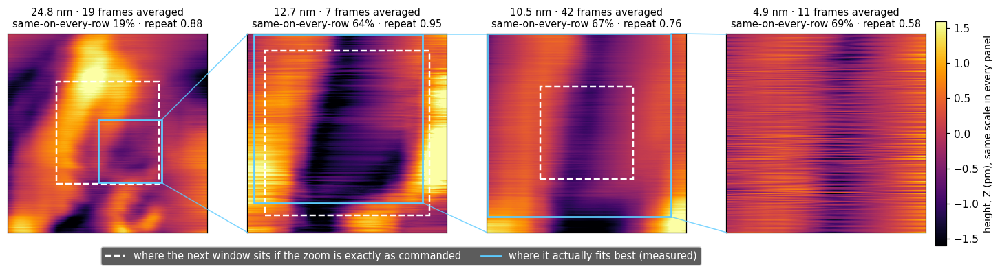
- 24.8 nm: rounded features of varied size, only 19% identical in every row. This looks like surface.
- 12.7, 10.5 and 4.9 nm: the same vertical dark band at about the same place and width in the frame, although the window shrinks 2.6×. Two-thirds of each image is identical in every row.
- Blue against white boxes: 10.5 in 12.7 nm fits almost exactly where commanded (1.18× measured against 1.21× commanded). 4.9 in 10.5 nm "fits" across almost the whole frame (1.09× against 2.14×), because the band looks the same at any zoom. 12.7 in 24.8 nm fits in a smaller box off to the side (3.2× against 1.95×), the unreliable pair from part (a).
What is consistent and what changes along the day's good region:
| Observation | Consistent? | What it means |
|---|---|---|
| Feedback lag dominates the raw Z image (78–97%, flips with direction) | Yes, at every window and line rate | Instrument; fix with a faster loop or slower lines |
| Folded band at ~40–55% across, 4.9–12.7 nm | Yes, but fixed in pixels across zooms | Instrument remainder, not surface |
| Rounded features at 24.8 nm | Repeats (0.88), scales plausibly | Best evidence of real morphology on Sept 24 |
| Slanted band sliding ~0.2 px/s; bottom-right corner | Present in all 10.5 nm frames, both Y halves | Not yet tested against zoom separately; treat as unconfirmed |
| 5.9 nm window at 19:12–19:13 | No (repeat 0.06) | Recorded just after rapid zoom changes; likely creep or drift, or a changed tip state |
Acceptance test for morphology, revised. A feature counts as surface only if it (1) survives trace/retrace folding, (2) repeats across frames, (3) appears in both Y halves, and (4) scales with the zoom. Test 4 is the only one that separates the sample from patterns fixed in the scan's coordinates. Figure 17 G passes 1–3 and fails 4.
3.7 What is the 35.9 Hz streak tone?
The thin streaks left in folded images contain one sharp tone. Measured at four line rates, it lands where a single fixed-frequency source would fold to:
| Realized line rate | Measured streak tone | Predicted for a fixed source near 159.5 Hz (or 231 Hz) |
|---|---|---|
| 195.3 Hz | 35.9 Hz (± 0.4) | 35.8 Hz |
| 130.2 Hz | 29.5 Hz (± 0.5) | 29.3 Hz |
| 65.1 Hz | 29.2 Hz (± 0.13) | 29.3 Hz |
- It is not tied to the scan. The tone's source frequency stays fixed while the line rate changes 3×, so it comes from a mechanical or electrical source that runs regardless of scanning.
- Its exact frequency can't be pinned down from these scans. Every line rate the firmware produced on Sept 24 is 390.625 Hz ÷ n (100 kHz ÷ 256 ÷ n). A source at F and one at 390.6 − F (or F + 390.6) then fold identically at every one of them. The candidates are about 159.5 Hz or 231 Hz (or 550 / 622 Hz). All sit in the 100–300 Hz band where a Z resonance was already suspected.
- The raw tap, recorded only while the scan was halted, shows nearby but not identical lines: 163.1, 202.9, 307.1 and 553 Hz in the current; 202.9 Hz also in Z. Only three halted stretches were usable (≥ 8 s, tunnelling), so this is thin evidence. 163.1 or 553 Hz could be the same resonance, shifted slightly when the tip is scanning.
- Coincidence: at 32.6 and 19.5 Hz lines, every candidate folds to about 3.2 Hz, close to the "3 Hz" wobble. At those rates the two effects overlap; at 130–390 Hz lines they separate, and the ~3 Hz wobble is then seen directly at ~3 Hz.
How to identify it: (1) record a halted, tunnelling raw capture of 2 minutes or more (plan item 2b) to get the true spectrum without folding; (2) scan once at a line rate that is not 390.625 Hz ÷ n, for example 384 pixels per line (195 Hz requested runs at 260.4 Hz, where 159.5 Hz folds to 100.9 Hz and 231 Hz to 29.4 Hz). That needs the GUI's power-of-two pixel snap removed; a different SETD tick also works; (3) tap or damp the lever, the sample plate and the scanner separately and see which line moves. Section 4.1 discusses candidate sources and ranks the tests by how easy they are.
4 · Discussion: what is limiting resolution
A model for the decoherence. After the repeated profile is removed, each row holds two things: surface relief that changes slowly with Y (amplitude S), and noise that is independent from row to row (amplitude N). Their adjacent-row correlation is then
\[ r = \frac{S^{2}}{S^{2} + N^{2}}, \qquad S \propto L^{\alpha} \;\;\Rightarrow\;\; r = \frac{1}{1 + \left(L_c / L\right)^{2\alpha}} \]
The surface relief inside a window grows with the window's size L (rough surfaces typically have α between 0.3 and 1), while N is fixed by the instrument. \(L_c\) is the window at which surface and noise are equal. Shrink the window below \(L_c\) and every row is mostly its own noise: that is the decoherence. It is the same shape of limit as the atomic sampling-phase effect in Figure 9b, with the instrument's noise floor in place of the lattice. The fit describes the data to about ±0.1 in r (Figure 12). It is phenomenological: it says when the image is lost, and Figure 13 says what the noise is.
| Rank | Cause | Evidence | Confidence | Test or fix |
|---|---|---|---|---|
| 1 | Feedback loop slower than a line. At KIGA 1.1444 the loop's time constant (≈9 ms) is longer than a 195 Hz line (5.1 ms), so Z never settles within a row and the lag after each X turnaround repeats on every row. | Pixel-locked profile carries up to 98% of variance and stays fixed in pixels across a 4.6× zoom (Fig. 10, 11). Confirmed independently: the valley flips sign with scan direction, and 78–97% of every image does (Fig. 14–16). Z varies only pm on gold with 235 pm steps. | High | KIGA sweep 1.14 → 2.3 → 4.6 → 9 on one area, and slower lines (meeting plan 2a, 2b). |
| 2 | Row-to-row noise floor of a few pm: a ~3 Hz wobble in row height, plus one Z tone that appears to come from 160 or 230 Hz. | ~3 Hz at the same frequency at 130, 195 and 390 Hz lines; one tone folding consistently to 35.1 and 29.5 Hz (Fig. 13). Candidate sources are discussed in Section 4.1; none is identified yet. | Medium | 2-minute halted-tunnelling capture with the 100 kHz raw tap (plan 2b) gives the unfolded spectrum directly; then damp or isolate the source. |
| 3 | Surface relief shrinks with the window until it falls below the noise floor. | r falls with window size at every line rate; \(L_c\) ≈ 2–5 nm nominal (Fig. 12). Tip speed falls 34× while coherence falls. | High (it's geometry) | Fixes 1 and 2 lower N and so \(L_c\). Pick windows ≥ 2 × \(L_c\) until then. |
| — | Not limiting yet: atomic sampling (5–6 px/atom), signal-chain bandwidth for atoms, slant, lateral calibration. | No lattice seen at any window; slant ≤ ½ px; calibration rescales labels but not r. | — | Revisit once a lattice is visible. |
4.1 Where could the 160 or 230 Hz tone come from?
Why a 160 Hz vibration shows up as about 30 Hz: the strobe effect. Each image row is one snapshot of the vibration, taken once per line (195.3 times a second on Sept 24). A vibration faster than the snapshots looks slow, as a wagon wheel on film seems to turn slowly or backwards. A 159.5 Hz vibration completes 0.817 of a cycle between rows, which looks the same as slipping back 0.183 of a cycle per row: 0.183 × 195.3 = 35.8 Hz, the stripe frequency measured. The same vibration predicts the 29.3 Hz stripes seen at 130.2 and 65.1 lines per second, which is why it must be a fixed physical source and not something the scan creates.
Why "Z resonance" is the leading idea. Everything between the tip and the sample is springy and has mass: the piezo disc, the stem, the tip wire, the lever and sample plate, the springs that hold them, and the coarse-approach screw. Every spring with a mass has natural frequencies at which it rings, like a tuning fork. Nudge it near one, with sound, floor vibration, a fan or the feedback loop itself, and it vibrates far more than the nudge. The tunnel current changes about tenfold for every ~0.1 nm of gap, so picometres of ringing in tip-to-sample distance show up clearly. The STM literature treats this as the central noise problem. The lowest mechanical resonance limits how fast the feedback can be, and noise-spectrum peaks line up with the structure's own vibration modes.
Why the frequency points to the larger parts. Professional STMs put their lowest resonance at 5–15 kHz (a stiff piezo tube or tripod), and even then the base or the coarse-positioning stage can add lower modes. Our buzzer disc with its stem was estimated at 3–4 kHz. A mode at 160–230 Hz is far too low for the disc itself. It points to a bigger, floppier part of the tip-to-sample path: the lever, the sample plate on its springs, or the coarse-approach screw and lever chain.
The general cure is a stiffer, more compact mechanical loop plus isolation. A short, rigid path from tip to sample pushes its resonances up and away from the noise that excites them. Isolation keeps floor and room vibration from reaching it at all. Stiff cables or tubes can short-circuit the isolation.
| Candidate source | Fits a fixed ~160 or ~230 Hz? | Notes |
|---|---|---|
| Mechanical mode of the lever, sample plate or springs | Good fit | Low and sharp, and the most likely given the build. Spring tension and plate bending were already raised as stability issues; the current "longboard" head is built around this lever, and the wedge assembly is a future concept to replace it with a stiffer design. |
| Sound in the room (voices, fans, HVAC, PC) | Likely exciter, not the frequency itself | Speech and fans carry a lot of energy at 100–300 Hz. The Sept 24 sound test showed the rig picks up 25 and 50 Hz tones. Room acoustic modes appear in published STM spectra, and one high-field STM reports a broad 100–250 Hz noise band. |
| Mains hum (60 Hz and harmonics) | Ruled out for this tone | At 195.3 lines/s, 120, 180 and 240 Hz would show at 75.3, 15.3 and 44.7 Hz, not 35.9. The raw tap does show a 61.5 Hz line worth checking separately. |
| Our own firmware and electronics | Unlikely for this tone; possible for others | The status stream runs at 200 Hz, and the raw tap has a strong 202.9 Hz line in Z. 200 Hz would show at 4.7 Hz in the 195 Hz scans, so it doesn't explain 35.9 Hz, but it could explain the 202.9 Hz line. |
| Stepper motor driver | Possible | Some drivers keep holding current, chopped at a fixed rate, even when the motor is "off". Worth checking whether the driver is powered during scans. |
| Feedback loop ringing | Not at today's gain | A loop crossing over at ~18 Hz is too slow to ring at 160–230 Hz. That changes once KIGA is raised: stop at the first ~200 Hz ringing. |
Tests, ordered by how easy they are to run
| Effort | Test | What it settles |
|---|---|---|
| Software setting only | One scan at a line rate that isn't 390.625 Hz ÷ n, e.g. 384 pixels per line (195 Hz requested runs at 260.4 Hz). Needs the GUI's power-of-two snap lifted, or a different SETD tick. | Breaks the ambiguity: 159.5 Hz would show at 100.9 Hz, 231 Hz at 29.4 Hz. |
| Software setting only | Change the status-stream rate (STRM) and watch the raw-tap lines. | Whether the 202.9 Hz line is our own electronics. |
| GUI action | Halted, tunnelling raw capture, constant current on, a few 30 s holds or one 2-minute hold. | The true spectrum with no strobe effect. Drift isn't a problem for this: it is slower than 1 Hz, the spectrum is computed in short segments, and the slow loop keeps tracking it while 160–230 Hz passes straight through to the current. Several short holds are safer than one long one if drift is large. |
| Bench, minutes | Tap test during a halted capture: tap the lever, the plate, the frame and the table one at a time. Switch-off test: fans, HVAC, stepper-driver power. | Ties a spectral line to a physical part, or to a source in the room. |
| Bench, minutes | Sound sweep: play a slow tone sweep from 100 to 300 Hz near the rig while recording. | A resonance shows as a sharp jump in current noise at one frequency. |
| Firmware change | Sine-sweep (lock-in) test: the firmware adds a tiny sine (a few pm) to Z, steps its frequency from ~50 Hz to ~1 kHz, and the PC reads the current's response at each frequency from the raw tap. | Measures the mechanical loop's frequency response directly: amplitude peaks and phase jumps mark each resonance. This is the standard way to characterise an STM head. |
Sources: ultra-stable STM design guidelines; dilution-refrigerator STM; vibration isolation systems for STMs; vibrational response of a beetle-type STM; STM feedback with separate actuators; Open STM (buzzer scanner); tube-scanner STM performance; STM in a Bitter magnet; compact UHV STM with dilution refrigeration; tunnel-current amplifier for mK STM; STM noise diagnostics (RSC supplement).
5 · Action items
Everything this report raised, framed as actions: what we would do, what it answers, and what we would change if the answer comes back positive. Each action is scored 1–3 on three scales so they can be compared:
- Lead: how likely it is to find or fix the main limit on resolution identified here (feedback lag first, then the row-to-row noise sources). 3 = likely.
- Ease: how quickly it can be done with what we have. 3 = analysis or a setting change; 2 = a bench session or a small code change; 1 = new hardware or a larger firmware feature.
- Impact: how much a positive result would change the instrument's design or standard settings. 3 = changes the design or defaults.
Click a column heading to sort. "Score" is the sum of the three. The chart places each action by ease and lead, with the circle size showing impact. Hover a circle for its name.
Top right = likely to find the lead and easy to do: start there. Big circles = would change the design.
Appendix A · Key firmware formulas
How the firmware (FW 5.6, software/firmware/arduinosrc/main/) turns the GUI settings into tip motion. Symbols: L = scan size, P = Pixels/line (IPLN), N = P/2 image pixels, R = line re-scan (LRPT), fISR = control-loop rate.
| Quantity | Formula | Where / notes |
|---|---|---|
| Control-loop (ISR) rate | \(f_{\mathrm{ISR}} = \dfrac{10^{6}}{\Delta t_{\mu s}}\) | SETD dt_us. Firmware default 40 µs (25 kHz); the GUI calibration uses 100 kHz (10 µs). |
| Samples per pixel | \(\mathrm{spp} = \left\lfloor \dfrac{10^{6}}{f_{\mathrm{line}}\,\Delta t_{\mu s}\,P} \right\rfloor\) | updateStepSizes(). Clamped to 1–4000. SPPX n pins it instead. |
| Realized line rate | \(f_{\mathrm{real}} = \dfrac{f_{\mathrm{ISR}}}{\mathrm{spp}\cdot P}\) | Differs from the request because spp rounds down (30 Hz at 512 → 32.55 Hz). |
| Image pixels, rows | \(N = \dfrac{P}{2}\) (both) | One line = trace + retrace, so half the samples belong to each. Scans are always square. |
| Pixel / row pitch | \(p = \dfrac{L}{N}\) | Same in X and Y. |
| X counter step per tick | \(\Delta x = \dfrac{4\cdot 2^{30}}{\mathrm{spp}\cdot P}\) | Exact rational step with a Bresenham remainder (FW 5.6). One full X triangle per line. |
| Y counter step per tick | \(\Delta y = \dfrac{\Delta x}{P\,R}\) | Y moves continuously: one row pitch per trace+retrace pair, half during each. |
| Position from counter | \(x_{\mathrm{pos}} = \dfrac{x_{\mathrm{count}}\cdot \mathrm{SCSZ}}{2^{31}} + \mathrm{XOFS}\) | xCount runs ±2³⁰ and reflects at the limits, giving x_pos = ±SCSZ/2 around the offset. |
| Size in DAC units | \(\mathrm{SCSZ} = 16\cdot\dfrac{L}{k_{\mathrm{nm/V}}\; k_{\mathrm{V/LSB}}}\) | scan_controller.py. ×16 because positions are 20-bit and the DAC is 16-bit with sigma-delta (one unit = 47.7 fm at 5 nm/V). |
| Slant angle | \(\theta = \arctan\dfrac{1}{2N}\) | Y moves p/2 while X moves N·p. |
| Half-sweep time | \(T = \dfrac{N\,R}{f_{\mathrm{real}}}\) | Time for one Y+ or Y− frame. |
| Tip speed on a trace | \(v = 2\,L\,f_{\mathrm{real}}\) | The trace takes half of each line period. |
| Feedback error | \(e = \ln I_{\mathrm{set}} - \ln\lvert I\rvert\) (as lookup tables) | controlTick(). Too little current → err > 0 → Z extends. |
| Integrator gain | \(K_{i,\mathrm{ISR}} = 65536\cdot\mathrm{KIGA}\), added every tick | setIsrGains(). Applied per tick, so the same KIGA at a higher f_ISR is a faster loop. Crossover ≈ 15.7 Hz per unit KIGA at 100 kHz (from 1.1444 → ~18 Hz, a model estimate). |
Appendix B · Glossary
- Adjacent-row correlation (r)
- How alike each image row is to the next once the profile shared by every row is removed. Near 1: real surface structure; near 0: row-to-row noise. Used in Section 3.
- Aliasing / moiré
- What undersampling produces: a false pattern with the wrong period and direction, not just blur.
- Beat period
- How many atoms before the sampling phase repeats: 1 ÷ (fractional part of pixels per atom). Close to a whole number gives a long, slow moiré; far from it gives a short, blotchy pattern.
- Calibration (nm/V)
piezo_x/y_nm_per_vconverts nm to volts. Currently a placeholder (5.0). Every nm on this page scales with it.- Coherence window (\(L_c\))
- The scan window at which r = ½: surface relief and row-to-row noise are equal. Smaller windows decohere. ≈2–5 nm nominal on Sept 24.
- Constant current (CC)
- Feedback moves Z to hold the tunnelling current at the setpoint. Topography appears in Z.
- Constant height
- Feedback off (or very slow); Z is held and topography appears in the current.
- Contrast surviving
- Fraction of the true atomic signal amplitude left after the signal chain and pixel averaging.
- Coverage parallelogram
- The true area scanned when rows are slanted: the intended square, sheared by the slant. No gaps between rows.
- Creep
- Slow continued piezo motion after a voltage change, about 1–2% more per tenfold time (vendor γ ≈ 0.015).
- Error channel (e_)
- setpoint − ln|current|, per pixel: what the loop hasn't corrected. Bright = less current.
- Fast axis (X)
- The axis scanned back and forth on every line. One line = one trace + one retrace.
- Hysteresis
- Piezo position depends on the direction it was moving, so trace vs retrace and Y+ vs Y− land slightly differently.
- ISR / control tick (SETD)
- The firmware's fixed-rate interrupt: it moves X/Y, reads the current and updates Z once per tick.
- KIGA
- The integral gain command for the CC loop. Applied per control tick.
- Line rate (LRAT)
- Requested lines per second. The realized rate is what the firmware really runs after rounding samples per pixel.
- Line re-scan (LRPT)
- Each row is scanned N times and averaged before it's sent. Y keeps moving during the repeats.
- Nyquist limit
- At least 2 samples per period are needed to record a repeating pattern at all. ≥4 to see its shape.
- Peak-capture scatter
- Atom-to-atom spread in apparent brightness caused by the sampling phase. Deterministic and repeatable, though it looks like noise. Frame averaging doesn't remove it; finer sampling does. Keep it under ~15% with ≥5–6 px per atom spacing.
- Pixel pitch / row pitch
- Distance between rows (and between pixels in a row): scan size ÷ (IPLN/2).
- Pixel-locked profile
- Content identical at the same X in every row, so it stays at the same pixel position when you zoom. Comes from timing within the line (e.g. loop lag after each X turnaround), not from the sample.
- Pixels/line (IPLN)
- Samples per line across trace and retrace together. The image is IPLN/2 pixels wide and IPLN/2 rows tall.
- Realized line rate
- The line rate the firmware actually runs after rounding samples per pixel down. Can differ greatly from the request (97.66 Hz at 512 px runs at 195.3 Hz).
- Retrace
- The X+ → X− half of a line, recorded too (
e_retrace,z_retrace). Not the tip retracting from the sample. Runs half a row pitch above its trace. - Row / line
- One image row is built from one trace. "Line" in firmware means trace + retrace.
- Samples per pixel (SPPX)
- Control-loop samples averaged into each pixel. Normally derived from line rate; SPPX pins it.
- Sampling phase
- Where within an atom (centre, flank, valley) the nearest sample lands. It walks from atom to atom unless pixels per atom is a whole number.
- Scan size (SCSZ)
- Side length of the square scan. Converted to DAC units using the piezo calibration.
- Shear
- The image distortion from drawing slanted rows as horizontal: up to ½ pixel at the right edge. Uncorrected in live and replay.
- Signal-chain corner, τ
- The bandwidth limit of everything between tip and ADC (preamp and possibly piezo response). Measured τ ≈ 400 µs, corner ≈ 400 Hz. Signals faster than the corner are attenuated.
- Slant
- The tilt of each row caused by Y moving during the row: half a row pitch over a full row. Angle atan(1/(2N)).
- Slow axis (Y)
- The axis that moves gradually from row to row. Ours moves continuously on every control tick, not in steps.
- Smear
- How far the tip travels in one chain time constant: features are dragged along the row by about that distance.
- Trace
- The X− → X+ half of a line. The live view and the default replay channel (
e_trace,z_trace) show trace data. The "forward" pass. - X / Y offset (XOFS, YOFS)
- Centre of the scan square. Moving it causes creep.
- Y+ / Y− half-sweep
- One pass of Y across the whole scan, rising (Y+) or falling (Y−). Replay calls them ▲ up and ▼ down; the live raster uses the opposite names (plan item 5d). Each one is a complete frame.
- Z channel (z_)
- The Z piezo position per pixel. Up = extend, so bright Z = lower surface.
- Z loop crossover
- The frequency above which the CC loop stops following the surface. Features passing faster than it show in the error channel instead of Z.
Appendix C · Limitations
- Case study: one sample, one tip, one day. \(L_c\) depends on the tip, the surface and the loop gain; treat the numbers as this rig's state on Sept 24, not constants.
- Case study: the noise sources discussed in Section 4.1 are hypotheses consistent with the spectra, not identified. A 160 Hz and a 230 Hz tone fold to the same observed values at these line rates; one more line rate or the raw tap would separate them.
- Case study: 34 of 1,125 sweeps have timestamps that disagree with the rebuilt line rate by more than 30%, mostly around dropped lines. Sweeps recorded at 1024 Pixels/line are indexed with the wrong row count and were excluded from the fits.
- All nm values assume the placeholder 5 nm/V calibration. Image a known lattice (HOPG, 0.246 nm) to correct it.
- The signal chain is modelled as one pole. The 400 Hz corner may combine the preamp with piezo mechanics, and that's still an open hypothesis.
- The KIGA → crossover conversion is an estimate from the Sept 24 diagnosis, not a measurement.
- Figure 4 assumes an ideal lattice with no noise, drift, creep, tip shape or loop lag. Real images are worse, never better.
- All motion shown is the commanded motion. The real piezo adds creep and hysteresis on top.